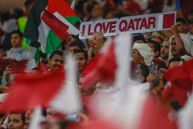

Qatar es uno de los lugares más calurosos de la Tierra, con una temperatura media en verano de 35 grados centígrados y con picos de temperatura de 50 grados. Como consecuencia de este calor, el Mundial de Qatar 2022 se disputa en noviembre y diciembre en lugar del pico habitual del verano.
|  |